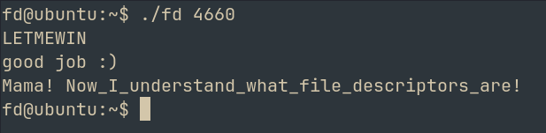

fd
A Toddler's Bottle pwn challenge from pwnable.kr, 6 minutes to read.
- platform
- pwnable.kr
- difficulty
- Toddler's Bottle
- category
- pwn
- published
- reading
- 6 min · 11 listings
- challenge
- pwnable.kr/play
- source
- ctf-writeups ↗
Hello everyone, welcome to this series where i'll be providing writeups for all the challenges on pwnable.kr
Today we will be trying out the first challenge, fd. Since this is the first challenge, I recon it will be very easy
The site instructs us to connect to the machine via SSH
After login, we see our files
Let's move all of it to our local machine
scp -P 2222 -r fd@pwnable.kr:/home/fd .- fd.c
#include <stdio.h>
#include <stdlib.h>
#include <string.h>
char buf[32];
int main(int argc, char* argv[], char* envp[]){
if(argc<2){
printf("pass argv[1] a number\n");
return 0;
}
int fd = atoi( argv[1] ) - 0x1234;
int len = 0;
len = read(fd, buf, 32);
if(!strcmp("LETMEWIN\n", buf)){
printf("good job :)\n");
setregid(getegid(), getegid());
system("/bin/cat flag");
exit(0);
}
printf("learn about Linux file IO\n");
return 0;
}The challenge hints us to learn about file descriptors --> In Linux, a file descriptor (FD) is a non-negative integer that serves as a unique per-process handle assigned by the kernel to manage any open input/output stream
The fd binary has SUID So it runs as root and we can read the file
Understanding the logic behind the code
int fd = atoi( argv[1] ) - 0x1234;The argument which we pass to the program, it's converted to its int equivalent (atoi) and then 0x1234 is subtracted from it
len = read(fd, buf, 32);What this means: we are reading fd, and we are storing the first 32 bytes into the "buf" which is a user defined 32 byte buffer
if(!strcmp("LETMEWIN\n", buf))strcmp compares two strings based off their ascii values. It returns 0 for true
Since we can control the file descriptor here, set it to 0 WHY: Because 0 is the FD for standard input ie, then we can just pass what the condition requires us to in order to obtain the flag
The int value of 0x1234 is 4660
Giving 4660 as arg, the program halts --> It is waiting for our input
Entering LETMEWIN and pressing enter, we get good job
Repeat the process on the target machine to reveal the flag

ALTERNATE APPROACH (DOES NOT RETRIEVE FLAG)
This is not the way the developers intended this challenge to be solve, but we can basically modify registers to trigger the winning funtion
In gdb,
set disassembly-flavor intel
set follow-fork-mode parent # for reading the flag, the binary invokes a child process where main() isnt defines --> error
disassemble main 0x0000120d <+0>: lea ecx,[esp+0x4]
0x00001211 <+4>: and esp,0xfffffff0
0x00001214 <+7>: push DWORD PTR [ecx-0x4]
0x00001217 <+10>: push ebp
0x00001218 <+11>: mov ebp,esp
0x0000121a <+13>: push esi
0x0000121b <+14>: push ebx
0x0000121c <+15>: push ecx
0x0000121d <+16>: sub esp,0x1c
0x00001220 <+19>: call 0x1110 <__x86.get_pc_thunk.bx>
0x00001225 <+24>: add ebx,0x2d97
0x0000122b <+30>: mov eax,ecx
0x0000122d <+32>: cmp DWORD PTR [eax],0x1
0x00001230 <+35>: jg 0x124e <main+65>
0x00001232 <+37>: sub esp,0xc
0x00001235 <+40>: lea eax,[ebx-0x1fb4]
0x0000123b <+46>: push eax
0x0000123c <+47>: call 0x1080 <puts@plt>
0x00001241 <+52>: add esp,0x10
0x00001244 <+55>: mov eax,0x0
0x00001249 <+60>: jmp 0x1306 <main+249>
0x0000124e <+65>: mov eax,DWORD PTR [eax+0x4]
0x00001251 <+68>: add eax,0x4
0x00001254 <+71>: mov eax,DWORD PTR [eax]
0x00001256 <+73>: sub esp,0xc
0x00001259 <+76>: push eax
0x0000125a <+77>: call 0x10c0 <atoi@plt>
0x0000125f <+82>: add esp,0x10
0x00001262 <+85>: sub eax,0x1234
0x00001267 <+90>: mov DWORD PTR [ebp-0x1c],eax
0x0000126a <+93>: mov DWORD PTR [ebp-0x20],0x0
0x00001271 <+100>: sub esp,0x4
0x00001274 <+103>: push 0x20
0x00001276 <+105>: lea eax,[ebx+0x84]
0x0000127c <+111>: push eax
0x0000127d <+112>: push DWORD PTR [ebp-0x1c]
0x00001280 <+115>: call 0x1060 <read@plt>
0x00001285 <+120>: add esp,0x10
0x00001288 <+123>: mov DWORD PTR [ebp-0x20],eax
0x0000128b <+126>: sub esp,0x8
0x0000128e <+129>: lea eax,[ebx+0x84]
0x00001294 <+135>: push eax
0x00001295 <+136>: lea eax,[ebx-0x1f9e]
0x0000129b <+142>: push eax
0x0000129c <+143>: call 0x1040 <strcmp@plt>
0x000012a1 <+148>: add esp,0x10
0x000012a4 <+151>: test eax,eax
0x000012a6 <+153>: jne 0x12ef <main+226>
0x000012a8 <+155>: sub esp,0xc
0x000012ab <+158>: lea eax,[ebx-0x1f94]
0x000012b1 <+164>: push eax
0x000012b2 <+165>: call 0x1080 <puts@plt>
0x000012b7 <+170>: add esp,0x10
0x000012ba <+173>: call 0x1070 <getegid@plt>
0x000012bf <+178>: mov esi,eax
0x000012c1 <+180>: call 0x1070 <getegid@plt>
0x000012c6 <+185>: sub esp,0x8
0x000012c9 <+188>: push esi
0x000012ca <+189>: push eax
0x000012cb <+190>: call 0x10b0 <setregid@plt>
0x000012d0 <+195>: add esp,0x10
0x000012d3 <+198>: sub esp,0xc
0x000012d6 <+201>: lea eax,[ebx-0x1f88]
0x000012dc <+207>: push eax
0x000012dd <+208>: call 0x1090 <system@plt>
0x000012e2 <+213>: add esp,0x10
0x000012e5 <+216>: sub esp,0xc
0x000012e8 <+219>: push 0x0
0x000012ea <+221>: call 0x10a0 <exit@plt>
0x000012ef <+226>: sub esp,0xc
0x000012f2 <+229>: lea eax,[ebx-0x1f7a]
0x000012f8 <+235>: push eax
0x000012f9 <+236>: call 0x1080 <puts@plt>
0x000012fe <+241>: add esp,0x10
0x00001301 <+244>: mov eax,0x0
0x00001306 <+249>: lea esp,[ebp-0xc]
0x00001309 <+252>: pop ecx
0x0000130a <+253>: pop ebx
0x0000130b <+254>: pop esi
0x0000130c <+255>: pop ebp
0x0000130d <+256>: lea esp,[ecx-0x4]
0x00001310 <+259>: retFrom the above and from the code, we can see exactly where the comparison takes place
0x000012a4 <+151>: test eax,eaxhere, the value of strcmp is being compared to 0 --> Strings match Just trying to set eax=0 before the test to bypass the restrictions
Get the address after running the file and breaking at main
0x565562a4 <+151>: test %eax,%eax(gdb) break *0x565562a4
Breakpoint 2 at 0x565562a4
(gdb) continue
Continuing.
Breakpoint 2, 0x565562a4 in main ()
(gdb) set $eax=0Fingers crossed..... And boom
(gdb) continue
Continuing.
good job :)Again, this is not the intended way to do it, the challenge is supposed to teach you about FD But this is another vuln But since gdb isnt run as root, flag will say permission denied
Happy Hacking :)